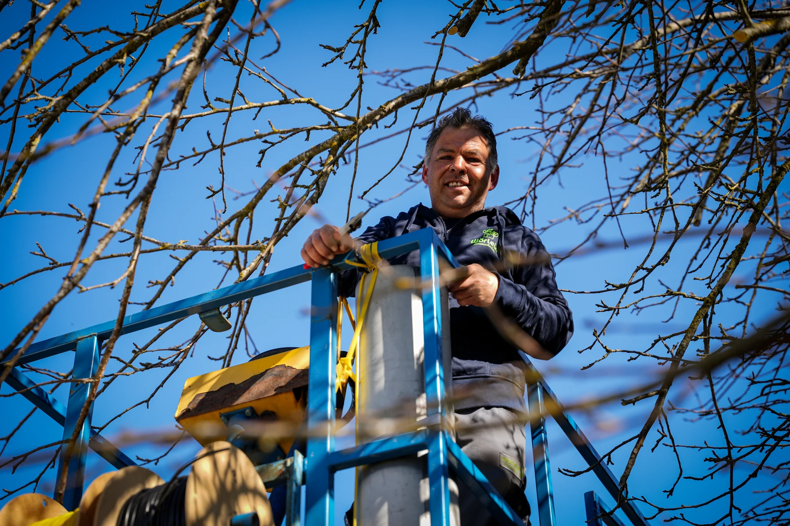

Branche & Praxis
Herbstpflege im GaLaBau: Laub sinnvoll räumen und nutzen
Ein praktischer Laubplan für Pflegebetriebe: Wege und Rasen freihalten, geeignete Beete mulchen, Material trennen und die Arbeit mit Kunden abstimmen.
Artikel lesen →Jede Woche ein neuer Praxisimpuls: recherchiert, verständlich eingeordnet und direkt für deinen Betrieb nutzbar.

Neue Perspektiven für GaLaBau, Baumschulen und Gartencenter. Mit fachlichen Quellen, konkreten Fragen und Ideen für die Praxis.
18 Beiträge
Ein praktischer Laubplan für Pflegebetriebe: Wege und Rasen freihalten, geeignete Beete mulchen, Material trennen und die Arbeit mit Kunden abstimmen.
Artikel lesen →Baumschulgärtner finden: Kulturarbeiten, Pflanzenkenntnisse und Verantwortung klar beschreiben. Mit Auswahlfragen, Kundenbeispiel und Checkliste.
Artikel lesen →Landschaftsgärtner finden: sieben konkrete Schritte für Aufgabenprofil, Arbeitgeberauftritt, regionale Ansprache und ein gutes erstes Gespräch.
Artikel lesen →Mitarbeiter fürs Gartencenter finden: Pflanzenberatung, Verkauf und Einsatzplanung klar vermitteln. Mit Gesprächsfragen, Kundenbeispiel und Checkliste.
Artikel lesen →Fachkräfte für Pflanzenhandel und Kulturbetriebe gewinnen: Produktion, Beratung und Versand getrennt ansprechen. Mit Rollenprofilen und Checkliste.
Artikel lesen →Vorarbeiter und Bauleiter im GaLaBau gewinnen: Verantwortung, Entscheidungswege und Anforderungen klar beschreiben und geeignete Kandidaten kennenlernen.
Artikel lesen →Branding für GaLaBau verständlich erklärt: Positionierung, Gestaltung und Alltag verbinden, damit Kunden und Bewerber deinen Betrieb besser einordnen.
Artikel lesen →Eine gute Website für Garten- und Landschaftsbau erklärt Leistungen, zeigt echte Projekte und führt mobil verständlich zur passenden Anfrage.
Artikel lesen →Marketing für Gartencenter mit saisonalen Themen, Beratung, lokalen Informationen und einem konkreten Ablauf vom Beitrag bis zum Besuch.
Artikel lesen →Local SEO für Garten- und Landschaftsbau: Unternehmensprofil, regionale Leistungsseiten, echte Bewertungen und Suchanfragen systematisch verbessern.
Artikel lesen →Wie Baumschulen ihr Sortiment, ihre Qualität und Beratung online verständlich zeigen – mit Themenplan für Fachkunden und private Gartenbesitzer.
Artikel lesen →Wie GaLaBau-Betriebe passende Mitarbeiter gewinnen: Arbeitgeberprofil, Stellenangebot, Bewerbung und Rückmeldung mit einem konkreten Ablauf verbessern.
Artikel lesen →Neukunden im GaLaBau gewinnen: Wunschprojekte definieren, Leistungen sichtbar machen und Anfragen strukturiert bis zum Erstgespräch führen.
Artikel lesen →Was gehört in ein gutes Recruiting-Video für den GaLaBau? Mit Interviewfragen, Drehplan, Formatwahl und Checkliste für authentische Einblicke.
Artikel lesen →Was GaLaBau, Baumschulen und Gartencenter für SEO und GEO tun können: klare Antworten, eigene Inhalte, interne Links und realistische Erfolgskontrolle.
Artikel lesen →Ein konkreter Social-Media-Plan für GaLaBau-Betriebe: Projekte, Menschen und Fachwissen in hilfreiche Reels und Beiträge verwandeln.
Artikel lesen →Ein praktischer Gesprächsleitfaden für GaLaBau, Baumschulen und Gartencenter: Standort, Artenwahl, Wasser und Pflege gemeinsam planen.
Artikel lesen →Welche Pflanzen harmonieren perfekt mit Lavendel? Praxis-Tipps für robuste, pflegeleichte mediterrane Beete im GaLaBau.
Artikel lesen →Lass uns herausfinden, wie dein Betrieb als Marke wächst – und die richtigen Menschen gewinnt.
Kostenloses Gespräch vereinbaren
Greenfield Digital begleitet Unternehmen aus der grünen Branche bei Marke, Mitarbeitergewinnung und digitalem Auftritt. Unsere Leitfäden richten sich an Inhaber und Entscheider in GaLaBau, Baumschulen und Gartencentern.
Wir nutzen KI für Recherche und Erstellung. Die Artikel nennen die verwendeten Primärquellen und den Recherchestand. Umsetzungsvorschläge sind als Empfehlungen einzuordnen; Kundenfälle und Ergebnisse werden nicht erfunden.
Das Unternehmen hinter den Inhalten →